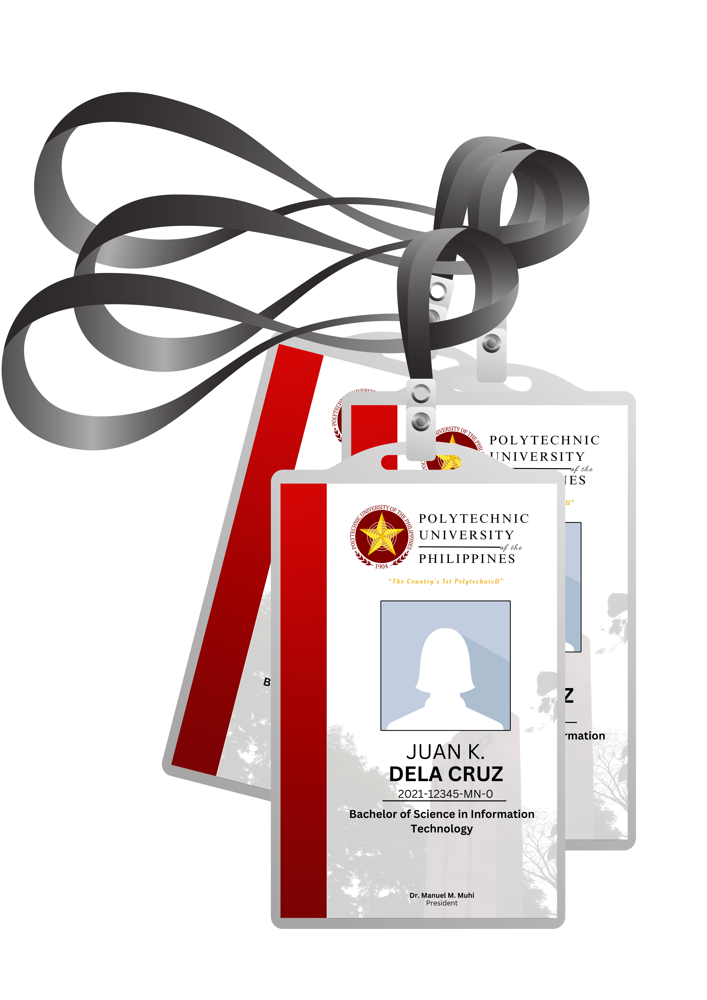

Polytechnic University of the Philippines'Application for New/Replacement of ID
The system is designed to provide a hassle-free experience, allowing students and staff to easily request new ID cards or replacements for lost or damaged ones. The Polytechnic University of the Philippines (PUP) offers a streamlined and efficient application process for obtaining new or replacement ID cards. Applicants can initiate the process by accessing the university's dedicated online portal or by visiting the designated administrative office on campus.
Start Application
